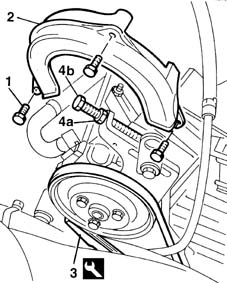

1092C12 power steering pump drive belt - adjust tension
- Path
- Procedures > 10 ENGINE UNIT > 1092 VARIOUS ENGINE COMPONENT CONTROLS > 1092C power steering/self-levelling suspension pump drive > 1092C12 power steering pump drive belt - adjust tension
- Kind
- repair procedure (removal / refitting; the operation number is the code)
- Applies to
- engines: 1.6 16v; all production periods
- Interactive page
- https://sloeber94.github.io/elrnDB-fMltpl/en/#/2891346
Applies to: engines: 1.6 16v; all production periods
1. Undo the retaining bolts.
2. Remove the power steering pump belt guard.
3. Use a dynanometer to check fitted belt tension.
 | Name | Country |
|---|---|---|
3 | Torque wrench | 1.895.762.000 |
 | Measurement | Value | |
|---|---|---|---|
- | Power assisted steering drive belt tension (daN) | 32.45 |
if the reading is not as specified, adjust belt tension.
4. Unscrew bolt (4a) and nut (4b) of the adjustment and tensioning device to slacken belt tension.
Tighten belt tension by readjusting the bolt and nut.
Use the dynanometer to check that the reading is within the specified range.

Applies to: engines: 1.6 16v; all production periods
Fit the power steering belt guard and tighten the bolts.
Topics that link to this page (7)
- S10 ENGINE WHILSTLING / SERVICES BELT NOISY'
- 0010K20 20,000km service coupon, emission control version
- 0010K21 20,000km service for emission control versions with a/c
- 1072C10 exhaust manifold - r + r and replace seal
- 1092C10 power steering and/or self-levelling suspension pump drive belt - r + r
- 1092C14 power steering pump/self levelling suspension pump pulley - r + r with belt removed
- 3330D18 brake servo r r for right hand drrive versions